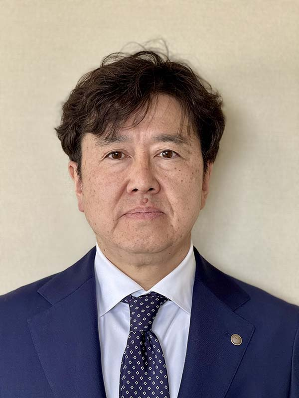
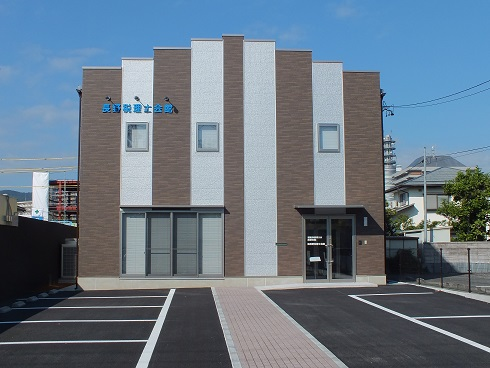

税務代理
あなたを代理して、確定申告、青色申告の承認申請、税務調査の立会い、税務署の更正・決定に不服がある場合の申立てなどを行います。
税理士をお探しの方はこちらをクリック。所在地やご依頼内容から税理士・税理士法人を検索できます！

「関東信越税理士会長野支部」のホームページへようこそ!!
このたび、関東信越税理士会長野支部の支部長を拝命いたしました平井幸光と申します。
歴史と伝統ある当支部の運営に携わる責任の重さを感じつつも、地域の皆さまや会員の皆さまと共に歩めることを大変光栄に思っております。
税は、私たちの暮らしや社会を支える大切な財源であり、公共サービスの根幹です。税理士は、その税が正しく納められるよう、納税者の皆さまを支援するとともに、公正な税務行政の一翼を担う存在です。
現在、社会や経済の変化とともに、税制や会計の分野も複雑化し、税理士に求められる役割はより専門的かつ多様化しています。私たちは、正確な知識と高い倫理観を持って、地域の皆さまに寄り添ったサービスを提供してまいります。
特に長野のように中小企業や個人事業主の多い地域では、税理士の役割はますます重要です。私たちは、地域経済を支える皆さまの伴走者として、信頼される専門家であり続けたいと願っております。
今後とも、地域社会から信頼され、選ばれる税理士であるために、研鑽を重ね、連携を深めてまいります。どうぞよろしくお願い申し上げます。
そのために支部では地域社会への貢献として、毎週水曜日に開催（要事前予約）する長野税理士会館での無料税務相談、「税を考える週間」における無料税務相談会等を開催しています。
税理士はあなたの信頼に応えます。
税理士は、税の専門家として納税者が自らの所得を計算し、納税額を算出する申告納税制度の推進の役割を担います。税理士は以下のような業務を行っています。
あなたを代理して、確定申告、青色申告の承認申請、税務調査の立会い、税務署の更正・決定に不服がある場合の申立てなどを行います。
あなたに代わって、確定申告書、相続税申告書、青色申告承認申請書、その他税務署などに提出する書類を作成します。
あなたが税金のことで困ったとき、わからないとき、知りたいとき、ご相談に応じます。「事前」のご相談が有効です。
あなたの依頼でe-Taxを利用して申告書を代理送信することができます。この場合には、あなた自身の電子証明書は不要です。
税理士業務に付随して財務書類の作成、会計帳簿の記帳代行、その他財務に関する業務を行います。
税務訴訟において納税者の正当な権利、利益の救済を援助するため、補佐人として、弁護士である訴訟代理人とともに裁判所に出頭し、陳述（出廷陳述）します。
税の情報・ご相談について、下記の無料相談をご利用いただけます。
※事前に電話でご予約ください。
℡ 026-228-6443
令和7年分確定申告に関するご相談は、令和8年2月～3月の期間中、若里市民文化ホールに専用の相談所を設けてご相談に応じます。当相談所では、確定申告以外のご相談を承ります。
当会では、確定申告会場に「無料申告相談所」を設け、次の方を対象として、所得税確定申告書(添付書類を含む)、消費税確定申告書(付表等を含む)及び各種届出書等の作成と記帳方法の説明、並びに税務相談を行います。
電子申告については下記を参考にしてください。
最新税制については下記ホームページをご覧ください。
タックスアンサーは、税に関するインターネット上の税務相談室です。よくあるご質問に対する回答を税金の種類ごとに調べることができます。また、キーワードによる検索もできます。
路線価を調べるには下記ホームページをご覧ください。
日本税理士会連合会発行の「やさしい税金教室」と、そのダイジェスト版「こんなときこんな税金～私の税金ナビ」です。是非ご利用下さい。パンフレットをご希望の方は、電話(03-5435-0939(広報課))又はprs@nichizeiren.or.jpにてお問い合わせ下さい。
関東信越税理士会の会員が行った業務に関し紛争が生じたときは、関東信越税理士会に、紛議の調停を申立てすることができます。この紛議の調停は裁判外紛争処理の一つとして、税理士会が税理士法の規定に基づいて行うものです。調停の申立をお考えの方は、下記のホームページの注意事項をよくお読みの上、所定の手続きを行ってください。
財務省の最新ニュース
※本欄は財務省の最新ニュースを掲載しています。

当支部では、以下の部門が連携して支部運営、会員支援、地域社会への貢献に取り組んでいます。
当支部の沿革は1942年（昭和17年）の税務代理士法公布にまで遡り、長野支部は名古屋地方会所属北陸税務代理士会会員として発足しました。1951年（昭和26年）の「税理士法」成立を経て、現在の関東信越税理士会長野支部として地域に根ざした活動を続けています。
以下フォームにご記入ください。税務相談については、支部の税務相談をご予約ください。また、忘れず全ての項目を入力してください。
このページは関東税理士会 長野支部会員の専用ページです。上記ページを利用するには支部会員ＩＤとパスワードが必要です。